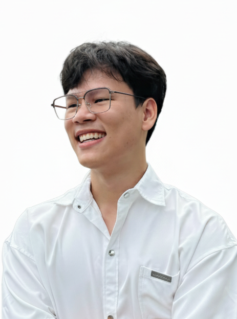

Dao Sy Duy Minh
Final-year AI undergraduate, VNUHCM University of Science, Ho Chi Minh City, Vietnam
I am finishing a B.Sc. in Artificial Intelligence at VNUHCM University of Science (Sep 2023 to Jul 2027, expected). I want foundation models to be safe when they plan and act for robots.
My research has two sides. One is drones that find their position from satellite maps when satellite navigation fails. The other is language-model agents whose decisions change with the stakes, the language and the culture. I work with Prof. Long Tran-Thanh (University of Warwick) and Prof. The Anh Han (Teesside University).
I am an R&D engineer at Compact AI, where I build edge AI for drones in a joint project with Realtime Robotics, and a research assistant in the Software Engineering Lab at my university with Assoc. Prof. Nguyen Van Vu. I am applying for PhD programmes starting in 2027 on safe foundation models for robotics.
Research interests: safe foundation models for robotics; LLM agent behaviour and multi-agent cooperation; reliable UAV perception.
23122041 [at] student.hcmus.edu.vn

News
- Nov 2026Our team HCMUS-TheFangs reached the semifinal (Top 12 of nearly 1,000 teams) of AI Thuc Chien 2026, a national AI competition broadcast on Vietnam Television (VTV).
- Nov 2026Payoff Scaling accepted at Interface Focus (Royal Society).
- Sep 2026Five papers accepted at NeurIPS 2026: four in the Main Track and one in the Evaluations and Datasets Track. I am co-first author on two.
- 20261st place at SemEval-2026 Task 11, and 1st place in the FSE-AIWare 2026 competition.
- Aug 2026Best Presentation at the SoICT Summer School on Edge AI, HUST.
- 20251st place in both tracks of the NeurIPS 2025 Mouse vs. AI Robust Foraging Competition.
Selected Publications
* equal contribution. Full list on Google Scholar.
Weather-Robust Cross-View Geo-Localization via Prototype-Based Semantic Part Discovery (SkyPart)
Chi-Nguyen Tran*, Dao Sy Duy Minh*, Huynh Trung Kiet*, Nguyen Lam Phu Quy, Pham Phu Hoa, Long Tran-Thanh
NeurIPS 2026, Main Track
Matches a drone's camera view to a satellite map by learning semantic parts such as roads and building blocks. The model has about 27M parameters, and its advantage grows under ten simulated weather conditions.
Training-Free Cultural Alignment of Large Language Models via Persona Disagreement (DISCA)
Dao Sy Duy Minh*, Huynh Trung Kiet*, Tuan Nguyen*, Chi-Nguyen Tran, Pham Phu Hoa, Nguyen Lam Phu Quy, The Anh Han, Long Tran-Thanh
NeurIPS 2026, Main Track
Adjusts a frozen LLM to the values of 20 countries without retraining, using disagreement among culturally grounded personas. It cuts cultural misalignment by 10 to 24%.
Payoff Scaling Shapes Cooperation in LLM Agents across Languages
Trung-Kiet Huynh*, Dao Sy Duy Minh*, et al., The Anh Han
Interface Focus (Royal Society), accepted Nov 2026
We studied about 12,000 agent pairs in a repeated Prisoner's Dilemma in five languages. Agents cooperate more as the stakes rise, which goes against game-theoretic predictions.
Early-Stage Prediction of Review Effort in AI-Generated Pull Requests
Dao Sy Duy Minh*, Huynh Trung Kiet*, Nguyen Lam Phu Quy, Pham Phu Hoa, et al.
MSR 2026 (ACM). Co-first author and corresponding author.
MEMRES: A Memory-Augmented Resolver with Confidence Cascade for Agentic Python Dependency Resolution
Dao Sy Duy Minh*, Tran Chi Nguyen, Huynh Trung Kiet, Pham Phu Hoa, Nguyen Lam Phu Quy, Vu Nguyen
FSE 2026 AIWare Companion (ACM). 1st place, FSE-AIWare 2026 competition.
Other Publications and Preprints
-
Unlocking Compositional Generalization in Continual Few-Shot Learning
Phu-Quy Nguyen-Lam, Phu-Hoa Pham, Dao Sy Duy Minh, Chi-Nguyen Tran, Huynh Trung Kiet, Long Tran-Thanh
-
MIST: Reliable Streaming Decision Trees for Online Class-Incremental Learning via McDiarmid Bound
Phu-Hoa Pham, Chi-Nguyen Tran, Nguyen Lam Phu Quy, Dao Sy Duy Minh, Huynh Trung Kiet, Long Tran-Thanh
-
Visual Robustness and Neural Alignment in a Shared Foraging Task: The Mouse vs. AI Benchmark
Dao Sy Duy Minh with co-authors
-
RoadFury at the ICST 2026 Tool Competition, Self-Driving Car Testing Track
Chi-Nguyen Tran, Dao Sy Duy Minh, Huynh Trung Kiet, Pham Phu Hoa, Nguyen Lam Phu Quy
-
HCMUS RepeatedGames at SemEval-2026 Task 12: CausalRAG
Duy Minh Dao Sy, Nguyen Tran, Trung Kiet Huynh, Phu Quy Nguyen Lam, Phu-Hoa Pham
-
DRAGON: Dual-Encoder Retrieval with Guided Ontology Reasoning for Medical Normalization
Dao Sy Duy Minh, Nguyen Lam Phu Quy, Pham Phu Hoa, Tran Chi Nguyen, Huynh Trung Kiet, Truong Bao Tran
-
Understanding LLM Agent Behaviours via Game Theory: Strategy Recognition, Biases and Multi-Agent Dynamics
Trung-Kiet Huynh, Duy-Minh Dao-Sy, et al.
Preprint, arXiv 2025 /
arXiv
-
Humans Are More Diverse: Frontier LLMs Show Extreme Policies in Idealised AI Development Races
Phu Hoa Pham, Duy Minh Dao Sy, et al., The Anh Han
Preprint, arXiv 2026 /
arXiv
Awards
- 2026Semifinalist, Top 12 of nearly 1,000 teams, AI Thuc Chien 2026 (national AI competition broadcast on VTV), team HCMUS-TheFangs
- 20261st Place, SemEval-2026 Task 11
- 20261st Place, FSE-AIWare 2026 competition
- 20261st Place, Nakba-NLP Shared Task (LREC 2026)
- 2026Best Presentation, SoICT Summer School on Edge AI, HUST
- 2026Strategic Technologies Scholarship, Australia-Vietnam Strategic Technologies Centre
- 2026Chan Hung Vietnam Industrial Technology Scholarship (9th edition)
- 2026Khoi Nguon Sang Tao Award, Tuoi Tre newspaper
- 2026Aspire Leaders Program, Cohort 4
- 20251st Place, both tracks, NeurIPS 2025 Mouse vs. AI Robust Foraging Competition
- 20252nd Prize, MMLoSo (IJCNLP-AACL 2025)
- 2025National Third Prize, Vietnam Student AI Olympiad
- 20252nd Runner-up, National Demo Day, GDGoC Hackathon Vietnam (NutriCare Agents)
- 2025First Prize, STARTWELL Student Wellness Hackathon, VNUHCM University of Science
Experience
- R&D Engineer, Compact AI, Ho Chi Minh City. Edge AI for drones, in a joint project with Realtime RoboticsFeb 2026 to present
- Research Assistant, Software Engineering Lab, VNUHCM University of Science, with Assoc. Prof. Nguyen Van Vu2026 to present
- B.Sc. in Artificial Intelligence, VNUHCM University of ScienceSep 2023 to Jul 2027 (expected)
- Founder, Learning AI with LosersOct 2024 to presentA free AI learning community in Vietnamese, with 22 explainer videos and 6 podcast episodes, and about 4,000 followers.